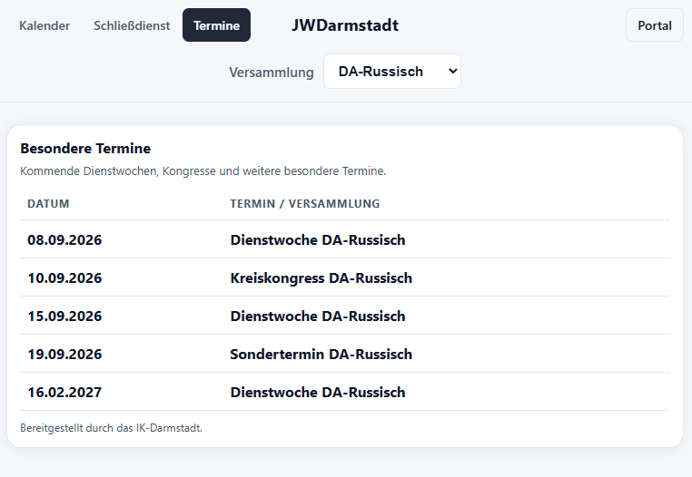

Hilfe zum öffentlichen Kalender
Der Kalender zeigt die Saalbelegung, den Schließdienst und besondere Termine. Er ist öffentlich und dient ausschließlich zur Anzeige.
Kalender verwenden
- Kalender: zeigt Zusammenkünfte, Treffpunkte und weitere Einträge in der Monatsansicht.
- Schließdienst: zeigt die vergebenen Schließdienste.
- Termine: zeigt kommende besondere Termine wie Dienstwochen und Kongresse.
- Versammlung: grenzt alle Ansichten auf eine ausgewählte Versammlung ein.
Klicke auf einen Kalendereintrag, um weitere Angaben wie Saal, Beginn, Ende und Terminart zu sehen. Entfallene Zusammenkünfte erscheinen nicht mehr als normaler Termin; verlegte Termine stehen am neuen Zeitpunkt.
Öffentlichen Kalender öffnenTerminlink einer Versammlung erhalten
Den öffentlichen Terminlink für deine Versammlung kannst du bei den Ältesten deiner Versammlung erfragen.
Der öffentliche Terminlink gewährt keinen Zugang zum Portal und erlaubt keine Änderungen.
So sieht der geöffnete Terminlink aus
Der Link öffnet direkt den Bereich „Termine“. Die zugehörige Versammlung ist bereits ausgewählt. Dadurch sehen Empfänger sofort die passenden besonderen Termine, ohne den Filter selbst einstellen zu müssen.

Beispiel: Terminansicht für DA-Russisch mit vorausgewähltem Versammlungsfilter.
Über die Navigation kann anschließend auch zum Kalender oder zum Schließdienst gewechselt werden. Die ausgewählte Versammlung bleibt dabei erhalten.